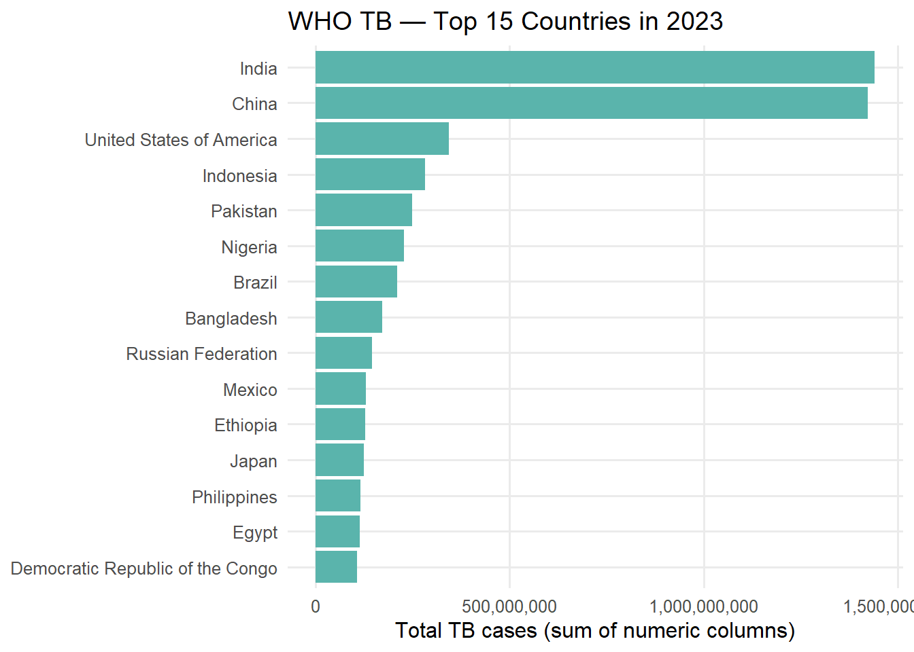

# necessary packages for data handling and plotting
library(tidyverse) # collection of useful R packages
library(janitor) # Helps clean up messy data names
library(here) # file paths work on anyone's computer- repro.
library(gt) # creating nice summary tables
# output folder
dir.create(here("Tidy_Tuesday","Week_1","output"))
# Path to data
f_tb <- here("Tidy_Tuesday","Week_1","data","who_tb_data.csv")Tidy Tuesday — Week 1 (WHO TB)
What’s new this week?
- used
janitor::clean_names()to standardize headers. - used robust tidying: sum across all numeric columns to compute total TB counts by country–year (works even if the file schema changes).
- used
forcats::fct_reorderto order bars by value. - saved the figure to
output/withggsave()and made a small gt table.
###Load & tidy
#Load the raw data and clean column names
tb_raw <- readr::read_csv(f_tb, show_col_types = FALSE) |>
janitor::clean_names() # Standardizes all column headers (e.g.,Country Name->country_name)
tb_tidy <- tb_raw |> #Tidy the data into a usable long format
rename( # Rename columns to standard names
country = any_of(c("country","country_name")),
year = any_of(c("year","yr"))
) |>
# Remove extra spaces
mutate(across(where(is.character), ~trimws(.))) |>
# Remove rows where the country name is missing (NA)
filter(!is.na(country)) |>
# grouping data by country and year
group_by(country, year) |>
# Calculate the total cases by summing ALL numeric columns
summarise(total_cases = sum(across(where(is.numeric)), na.rm = TRUE), .groups = "drop"
)
#Filtering and Ordering data for plot
focus_year <- max(tb_tidy$year, na.rm = TRUE) #Define parameters
top_n <- 15 # showed the top 15 countries
top_cty <- tb_tidy |>
filter(year == focus_year) |> #Select only the data from the newest year
arrange(desc(total_cases)) |> #descending order of cases
slice_head(n = top_n) |> # Keep only the top (15) countries
mutate(country = forcats::fct_reorder(country, total_cases)) #bars are ordered correctly in the plot
# check
top_cty |> head()# A tibble: 6 × 3
country year total_cases
<fct> <dbl> <dbl>
1 India 2023 1441516640.
2 China 2023 1423380258.
3 United States of America 2023 343490552.
4 Indonesia 2023 282543470.
5 Pakistan 2023 248289163.
6 Nigeria 2023 228524726.###Plot
p <- ggplot(top_cty, aes(x = country, y = total_cases)) +
geom_col(fill = "#5ab4ac") + # column geometry (bar chart) and color
coord_flip() + #Flip the coordinates so country names are readable on the y-axis
scale_y_continuous(labels = scales::label_comma()) +
labs( #Format the Y-axis numbers to include commas (e.g., 1000000->1,000,000)
title = paste("WHO TB — Top", top_n, "Countries in", focus_year), # Add titles and labels
x = NULL, # Remove the x-axis label
y = "Total TB cases (sum of numeric columns)"
) +
theme_minimal(base_size = 12) + #theme
theme(panel.grid.minor = element_blank()) #remove grid
# Show the plot
p
## Save the plot
ggsave(here("Tidy_Tuesday","Week_1","output","tb_top_countries.png"), p,
width = 9,
height = 6,
dpi = 320)Summary table
# table of the top countries
top_cty |>
select(country, total_cases) |> # Select only the country and case count columns
gt() |>
# Format the case counts with commas and zero decimal places
fmt_number(
columns = total_cases,
decimals = 0,
sep_mark = ","
) |>
# Add a title and subtitle
tab_header(
title = md("**Total TB Cases by Country**"),
subtitle = paste("Top", top_n, "Countries in", focus_year)
) |>
# Change column labels
cols_label(
country = "Country",
total_cases = "Total Cases"
)| Total TB Cases by Country | |
|---|---|
| Top 15 Countries in 2023 | |
| Country | Total Cases |
| India | 1,441,516,640 |
| China | 1,423,380,258 |
| United States of America | 343,490,552 |
| Indonesia | 282,543,470 |
| Pakistan | 248,289,163 |
| Nigeria | 228,524,726 |
| Brazil | 211,270,001 |
| Bangladesh | 171,934,738 |
| Russian Federation | 145,509,327 |
| Mexico | 129,786,573 |
| Ethiopia | 128,938,689 |
| Japan | 124,390,066 |
| Philippines | 115,706,856 |
| Egypt | 114,548,747 |
| Democratic Republic of the Congo | 106,211,040 |